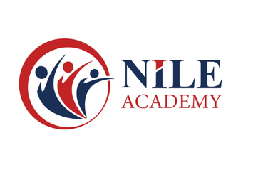
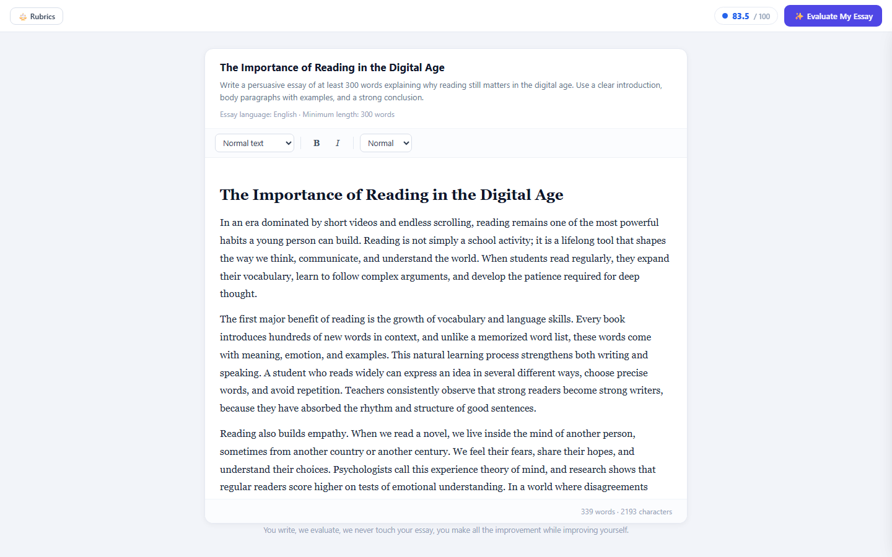

nileacademy.ca

Nile Academy
Toronto, Ontario · 2005'ten beri- JK–Grade 12; Ontario müfredatı.
- Fen ve teknoloji vurgusu.
- Yatılılık ve gece okulu.
Okullar, okul öncesi, öğretmenler, Türkçe eğitimi ve dersanecilik: beş bağımsız alan. Future Bridge Academy'nin çekirdeği: Öğrenci Dosyası.
Nile · Nebula

Kurum · ECE

Gelişim · mentorluk

Weekend school · aile

Future Bridge

 nebulaacademy.ca
nebulaacademy.ca

Gölgeleme ve temel eğitim.
Sertifikalı sınıf uygulaması.

Program liderliği ve mentorluk.

Uyum, ekip ve kalite.
Oryantasyon ve temel pedagoji.
Planlama, sınıf yönetimi, geri bildirim.

Program tasarımı ve akran gözlemi.

Öğretmen eğitimi ve kalite standardı.

Demo ders, referans ve çocuk koruma taraması.

Bireysel plan, atölye, mentorluk, akran gözlemi.

Görünür kariyer basamakları ve aidiyet.


Beş birimin durumu ve öncelikleri.

Öğretmen gelişimi, ECE açılışı, Türkçe pilotu.
Sonuçları ölç, iyi uygulamayı yay.

Haftalık online matematik, aylık deneme, anında düzeltme.
Üniversite, college, trades, IB ve AP; burs seminerleri.
Merkez: odalar, rutinler ve gözetim.
Merkezle açılacak: küçük grup dersleri · birebir mentorluk · yazılı yol planı · CEMC kulübü · IB/AP · İngilizce ve yazma.
 YENİ ÇEKİRDEK
YENİ ÇEKİRDEK
Profil, başvuru, portföy ve son tarihler tek dosyada.
Araç: Student File Builder For Applications
 HİZMET 02
HİZMET 02
Bölümler sırayla açılır; ilerleme ve onay izlenir.
Araçlar: Curriculum Builder + Self-Paced By Section

HİZMET 03Öğrenci yazar, rubrikle puan alır, kendi metnini düzeltir.
Araçlar: Essay Subject Builder + Essay Writing Educator
nileacademy.ca
nebulaacademy.ca
futurebridgeacademy.ca
Ücretsiz ders ve deneme sınavı
Future Bridge Academy'nin program ve merkez planını netleştirmek.